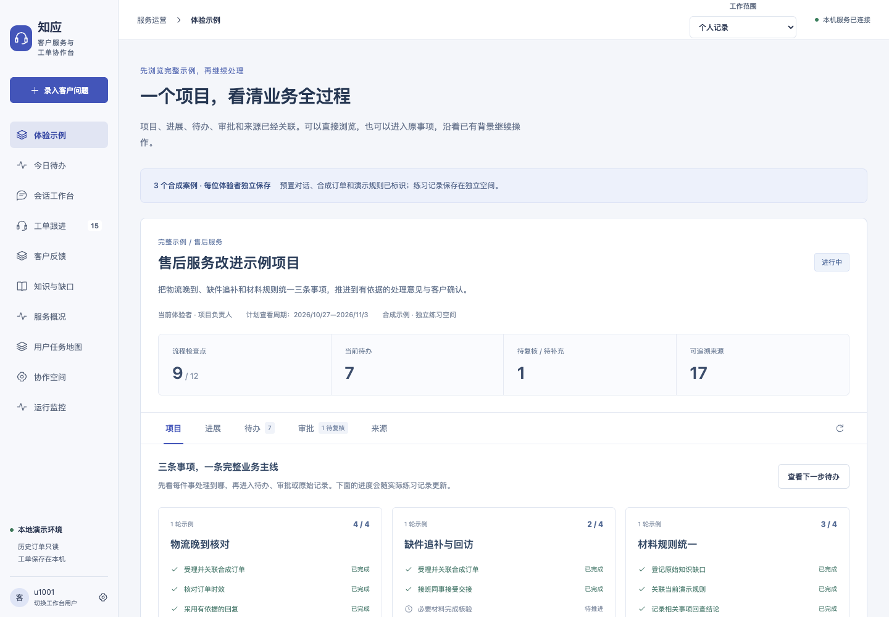
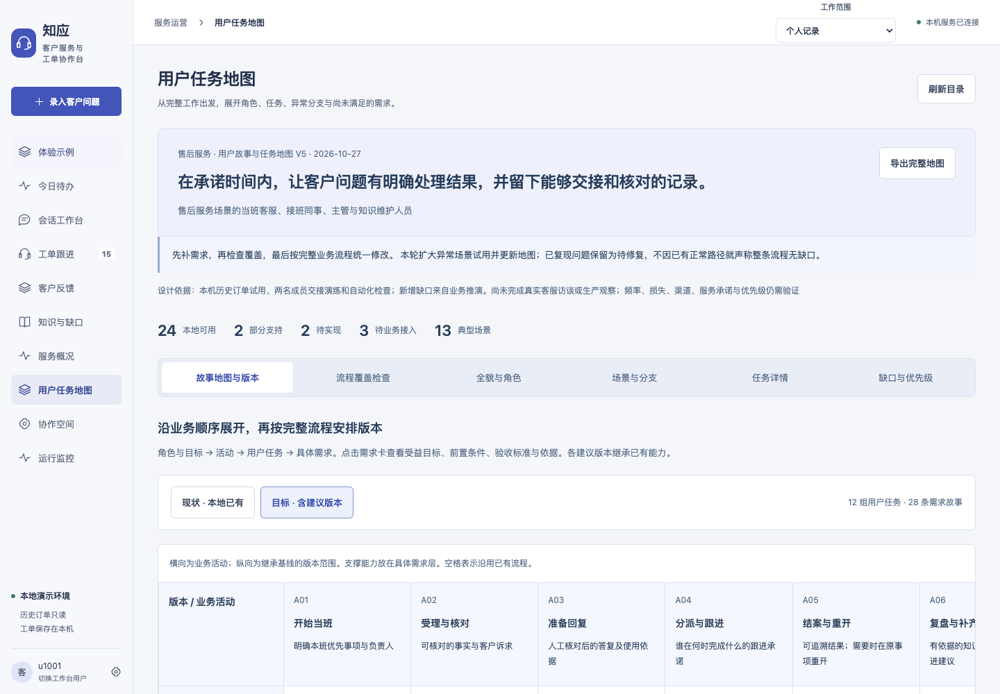

事实与政策分开
订单时间可以直接核对；退款或赔付承诺必须有生效规则。测试资料不自动成为正式政策。
知应 · 客户服务与工单协作台
客服写完一段回复，事情可能还没办完。知应把客户原话、订单事实、处理依据和后续责任接在一起，让接班的人知道下一步。
个人改造项目 · 基于既有 EchoMind 工程 · AI 辅助开发与验证
当前完整产品在本地运行；本页为公开案例讲解，可交互演示不调用模型。

为什么从聊天走向工作台
在模拟客服日常操作时，问题往往发生在生成之后：上一班核对了哪些材料，当前规则有没有生效，客户是否确认解决，以及下一次由谁继续跟进。
因此，设计从任务而非菜单出发。把“生成回复”放进完整流程，让采用草稿、审批通过、内部完成和客户确认分别记录。
需求依据是本地业务推演、Agent 情境走查和自动化检查，尚未完成真实客服访谈或生产观察。
订单时间可以直接核对；退款或赔付承诺必须有生效规则。测试资料不自动成为正式政策。
负责人、材料状态、下一步和截止时间一起交接；接手前核对当前版本，避免旧清单覆盖新进展。
审批通过不等于客户问题已解决。重开后按本轮处理结果重新确认，旧确认保留在历史里。
跟着一个案例走
许晴收到的商品缺少连接线。上一班核对了外包装照片，配件数量说明仍待补齐。以下是合成案例的流程讲解。
交互讲解 · 不操作真实订单，不调用模型，不保存业务记录。
从目标到完成条件
四类角色，六个业务阶段，31 项任务与 13 个场景。每项写清触发、步骤、完成条件、异常出口和剩余缺口；数量不代表全部实现。
“本地已具备”只表示所列本地能力；外部渠道、真实退款和企业身份权限仍需接入与验证。频率及优先级尚无真实业务样本。

什么需要 Agent
需要读订单事实时直接查询；需要组织答复时按领域分派；没有可用政策时明确缺口。不是每一步都需要调用模型。
这里回放的是 2026.10.27 的验收结论，切换情境不会产生新的模型调用。意图识别、回复 Agent、知识工具和底层请求分别计量。
本地用户切换用于协作演练，不能替代企业登录和真正的权限隔离。
成功执行之后，还要核对答案
先写预期，再通过实际界面办理，最后核对调用与业务结果。自动化、界面走查和内容检查各有结论。
2026.10.28 本地复跑，前端生产构建通过；包含原有用例，不是 310 条完整业务旅程。
2026.10.27 操作。11 次编排、15 次 Agent 执行包含修复前与复验；不等于 Token 或计费请求数。
退款顺序扩写，以及错误码与规则边界扩写。调用完成但内容未通过，不能算整体验收通过。
| 场景 | 路由观察 | 内容 / 结论边界 |
|---|---|---|
| 单技术问题，否定退款 | 只派技术支持 | 领域分派通过，不推导任意回答正确率 |
| 已发货退货退款 | 账单售后执行完成 | 未通过：擅自增加退款申请先后关系 |
| 重复扣款 + 401 崩溃 | 技术与账单均执行 | 未通过：出现 301 和无依据的退款方式 |
| 故障已恢复，资金仍待核对 | 曾多派技术，修复后仅账单 | 修复后界面复验通过；历史问题不抹除 |
| 订单时效核对 / 无政策依据 | 主动不调用回复 Agent | 分别返回事实或缺口，不用默认字段伪装执行 |
历史练习数据来自 Kaggle 的 Olist 巴西电商公开数据集（2016—2018 年），评价以葡萄牙语为主。原文和只读订单保留，机器译文供人工核对。演示项目的客户、订单和规则为合成内容，单独标注，不混作正式政策。
Olist 数据来源 · CC BY-NC-SA 4.0；仓库和公开页面不打包原始数据或私人业务记录。
没有外部客服研究、真实渠道发送、实际退款或生产 SLA 结论。单 Agent 失败、协作部分失败、超时与备用处理主要通过隔离受控测试验证，不能当作全部完成真实界面故障验收。
优先为退款顺序、错误码保留和缺失规则补充固定内容断言，再走界面复验；随后由真实业务人员观察接班与结案流程，验证任务优先级和完成条件。暂不虚构效率提升、满意度或节省成本。
从客户原话到处理结果，保留依据、状态与责任。产品的价值需要在真实工作里继续验证。